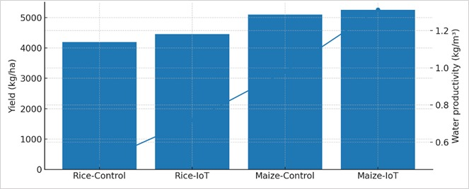
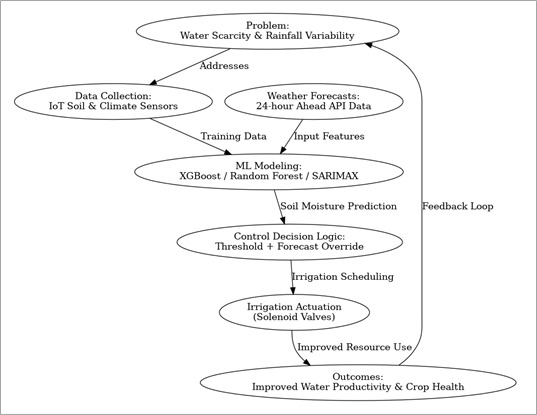
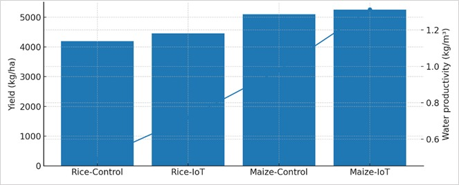
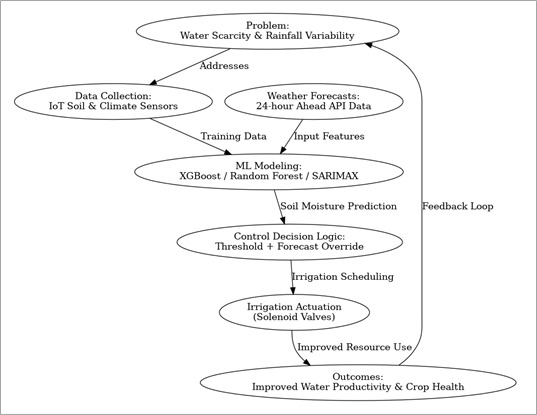

EMBEDDED INTELLIGENCE SOLUTIONS
Bridging hardware and AI to solve real-world challenges through innovative engineering.
1. IoT-Based Agro-Robot Smart Irrigation System

Problem: Manual farming methods lead to excessive labor, inconsistent crop monitoring, and inefficient use of resources such as water, fertilizer, and soil nutrients, resulting in reduced productivity and higher operational costs.
Solved Solution: Developed an IoT-based Smart Agro Robot using ESP32 for autonomous field monitoring and data collection, capable of measuring soil moisture, temperature, pH, and NPK nutrient levels. The system provides real-time data visualization and automated decision support through the Blynk IoT app.
Technology: ESP32 IoT Sensors Blynk Cloud Automation
Innovation: Mobile robotic platform enabling real-time, multi-parameter soil and environment analysis with IoT-based remote monitoring and autonomous navigation for smart farming.
Market Application: Precision agriculture, soil health management, crop monitoring, smart farming systems, agri-tech research and education.
Commercial Potential: Scalable solution for farmers, agri-tech companies, and sustainable agriculture initiatives by improving yield prediction and input optimization.
Lab Origin: NI Lab, NIST University, India — Under Dr. Kunjabihari Swain
2. Knock Pattern Authentication-Based Smart Door Access System
Problem: Biometric and RFID systems are costly, power-hungry, and prone to spoofing.
Solved Solution: Designed a smart access control device that authenticates users based on unique knock-time patterns using a piezo sensor and embedded pattern recognition logic.
Technology: Piezo-electric Transducer Microcontroller Pattern Recognition Embedded System
Innovation: Offline, low-power, multi-user access control with gesture-based authentication.
Market Application: Smart homes, hostels, offices, and IoT security solutions.
Commercial Potential: Medium — can be mass-produced as a low-cost alternative to smart locks.
Lab Origin: Department of ECE, NIST University — Under Dr. Sandipan Mallik
3. Intelligent IoT & ML-Based Smart Irrigation Forecasting System
 



Problem: Unpredictable weather and soil conditions cause water wastage and poor irrigation planning.
Solved Solution: Developed a predictive irrigation system integrating IoT sensors and ML models (Random Forest, XGBoost, SARIMAX) to forecast soil moisture and optimize water usage.
Technology: IoT Sensors Machine Learning Cloud Analytics Decision Support System
Innovation: Combines IoT and AI for predictive irrigation and precision agriculture decision-making.
Market Application: Agri-tech startups, smart irrigation services, sustainable farming solutions.
Commercial Potential: Very High — scalable SaaS platform for agriculture and water management sectors.
Institution: IISER Berhampur — Under Dr. Anabik Pal
4. PORTA-MP — AI/ML-Based Portable Microplastic Detection
Problem: Laboratory detection of microplastics is expensive, slow, and inaccessible for field monitoring.
Solved Solution: Created a portable AI-driven device using Nile Red staining and UV fluorescence imaging on Raspberry Pi for fast, on-site microplastic detection.
Technology: Raspberry Pi AI/ML Image Classification UV Fluorescence Embedded Software
Innovation: Sub-minute, 100× cheaper portable microplastic analysis system for field deployment.
Market Application: Environmental monitoring, wastewater analysis, ocean cleanup missions, research labs.
Commercial Potential: Very High — strong demand for low-cost environmental testing kits.
Lab Origin: Department of ECE, NIST University — Under Dr. Sandipan Mallik
5. Wafer Defect Detection System Using Machine Learning
Problem: Manual wafer inspection in semiconductor fabrication is time-consuming and prone to errors.
Solved Solution: Built an ML-based solution to detect and classify wafer surface defects using measurement parameters like thickness, bow, warp, and resistivity.
Technology: Machine Learning Computer Vision Semiconductor Analytics
Innovation: Automated defect identification improving yield and reducing inspection costs.
Market Application: Semiconductor manufacturing, wafer R&D labs, chip quality control.
Commercial Potential: High — valuable to semiconductor fabs and R&D institutions.
Collaborator: National Taiwan Hsinchu University — In collaboration with V. Someswar Rao
6. Excel Row-Column Extractor Software Tool
Problem: Research labs struggle with manual extraction and organization of experimental data from large Excel sheets.
Solved Solution: Developed a Python-based tool that automatically extracts required rows/columns and restructures data for easy analysis.
Technology: Python Pandas OpenPyXL GUI Automation
Innovation: One-click automated data parsing and export for laboratory test results.
Market Application: Research and testing laboratories, data-intensive R&D facilities.
Commercial Potential: Medium-Low — useful as custom productivity software for labs.
Client: Mr. Sunil K Singh, AIU Modern Research Lab, South Korea
7. Reference-to-RIS Converter Software Tool
Problem: Researchers spend hours manually formatting references for citation managers and journals.
Solved Solution: Created a Python application that converts written references into .RIS files compatible with Mendeley, EndNote, and Zotero.
Technology: Python Text Parsing Regex File I/O Automation
Innovation: Automates citation formatting, saving up to 90% researcher time.
Market Application: Academic institutions, research labs, journal publishers, citation management software.
Commercial Potential: Medium — potential as a SaaS citation tool or plug-in.
Client: Semiconductor Device Fabrication Research Lab, NIST University, India
8. XRD Material Classification Using Machine Learning
Problem: Manual interpretation of X-ray diffraction patterns is slow and prone to human error.
Solved Solution: Developed an ML model to automatically classify XRD patterns and identify crystalline structures and material phases.
Technology: Machine Learning Python Materials Informatics Pattern Recognition
Innovation: Automated, high-accuracy XRD data analysis system for material identification.
Market Application: Material research labs, semiconductor R&D, metallurgy, ceramics industries.
Commercial Potential: High — applicable for industrial R&D and academic research centers.
Collaborator: National Taiwan Hsinchu University, Taiwan — In collaboration with V. Someswar Rao